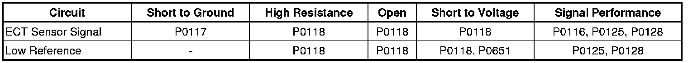
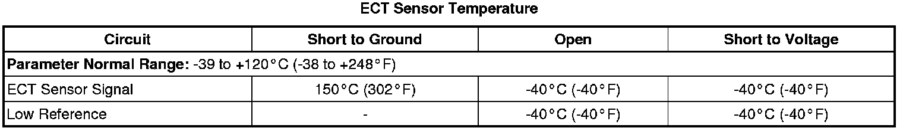

P0118
DTC P0117 or P0118
Diagnostic Instructions
* Perform the Diagnostic System Check - Vehicle (Initial Inspection and Diagnostic Overview) prior to using this diagnostic procedure.
* Review Strategy Based Diagnosis (Initial Inspection and Diagnostic Overview) or an overview of the diagnostic approach.
* Diagnostic Procedure Instructions (Initial Inspection and Diagnostic Overview) provides an overview of each diagnostic category.
DTC Descriptors
DTC P0117
- Engine Coolant Temperature (ECT) Sensor Circuit Low Voltage
DTC P0118
- Engine Coolant Temperature (ECT) Sensor Circuit High Voltage
Diagnostic Fault Information

Typical Scan Tool Data

Circuit/System Description
The engine coolant temperature (ECT) sensor is a variable resistor that measures the temperature of the engine coolant. The engine control module (ECM) supplies 5 volts to the ECT sensor signal circuit and supplies a ground to the low reference circuit.
Conditions for Running the DTC
P0117
* The engine is running for more than 10 seconds.
OR
* The engine run time is less than 10 seconds when the intake air temperature (IAT) is colder than 50°C (122°F).
* This DTC runs continuously within the enabling conditions.
P0118
* The engine is running for more than 10 seconds.
OR
* The IAT is more warmer 0°C (32°F).
* This DTC runs continuously within the enabling conditions.
Conditions for Setting the DTC
P0117
The ECM detects that the ECT is warmer than 149°C (300°F) for more than 5 seconds.
P0118
The ECM detects that the ECT is colder than -39°C (-38°F) for more than 5 seconds.
Action Taken When the DTC Sets
DTCs P0117 and P0118 are Type B DTCs.
Conditions for Clearing the MIL/DTC
DTCs P0117 and P0118 are Type B DTCs.
Diagnostic Aids
* If an engine overheating condition exists, it is possible to set a DTC P0117. Verify the proper heat range and the operation of the thermostat. Refer to Thermostat Diagnosis (Component Tests and General Diagnostics) .
* An ECT sensor signal circuit or low reference circuit that is shorted to another 5-volt reference circuit can cause a DTC P0118 to set.
Reference Information
Schematic Reference
Engine Controls Schematics (Electrical Diagrams)
Connector End View Reference
Component Connector End Views (Connector Views)
Electrical Information Reference
* Circuit Testing (Component Tests and General Diagnostics)
* Connector Repairs (Component Tests and General Diagnostics)
* Testing for Intermittent Conditions and Poor Connections (Component Tests and General Diagnostics)
* Wiring Repairs (Component Tests and General Diagnostics)
DTC Type Reference
Powertrain Diagnostic Trouble Code (DTC) Type Definitions (Diagnostic Trouble Code Descriptions)
Scan Tool Reference
Control Module References (Programming and Relearning) for scan tool information
Circuit/System Verification
1. Ignition ON, observe the ECT Sensor parameter. The reading should be between -37 to + 139°C (-35 to +282°F).
2. Operate the vehicle within the Conditions for Running the DTC. You may also operate the vehicle within the conditions that you observed from the Freeze Frame/Failure Records data.
Circuit/System Testing
1. Ignition OFF, disconnect the ECT harness connector at the ECT sensor.
2. Ignition OFF for 90 seconds, test for less than 5 ohms of resistance between the low reference circuit terminal B and ground.
• If greater than the specified range, test the low reference circuit for an open/high resistance. If the circuit tests normal, replace the ECM.
3. Ignition ON, verify the scan tool ECT Sensor parameter is colder than -39°C (-38°F).
• If greater than the specified range, test the signal circuit terminal A for a short to ground. If the circuit tests normal, replace the ECM.
4. Install a 3A fused jumper wire between the signal circuit terminal A and the low reference circuit terminal B. Verify the scan tool ECT Sensor parameter is warmer than 149°C (300°F).
• If less than the specified range, test the signal circuit for a short to voltage or an open/high resistance. If the circuit tests normal, replace the ECM.
5. If all circuits test normal, test or replace the ECT sensor.
Component Testing
Measure and record the resistance of the ECT sensor at various ambient temperatures, then compare those measurements to the Temperature vs Resistance table. Refer to Temperature Versus Resistance (Temperature Versus Resistance) .
Repair Instructions
Perform the Diagnostic Repair Verification (Verification Tests) after completing the diagnostic procedure.
* Engine Coolant Temperature Sensor Replacement (Service and Repair)
* Control Module References (Programming and Relearning) for ECM replacement, setup, and programming